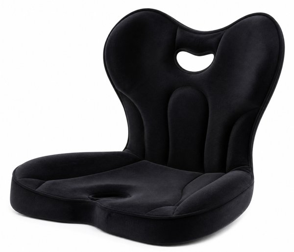
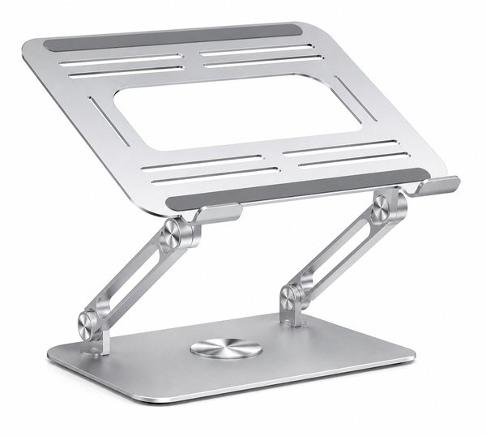
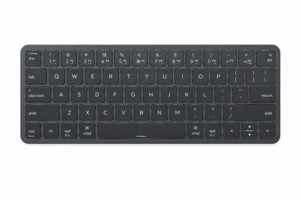
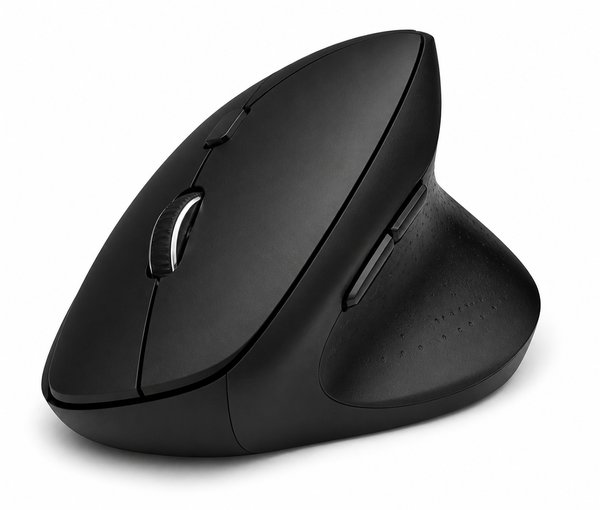
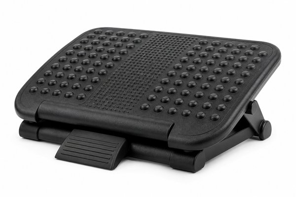
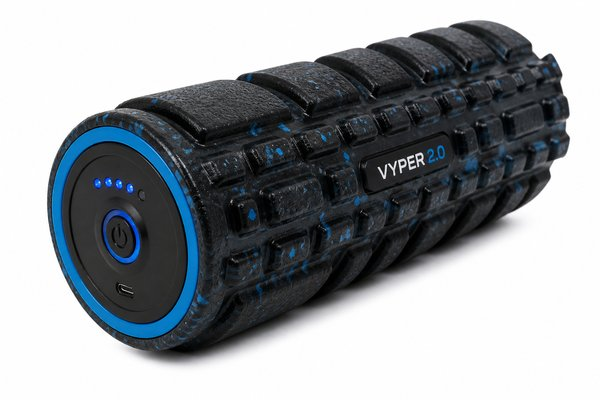
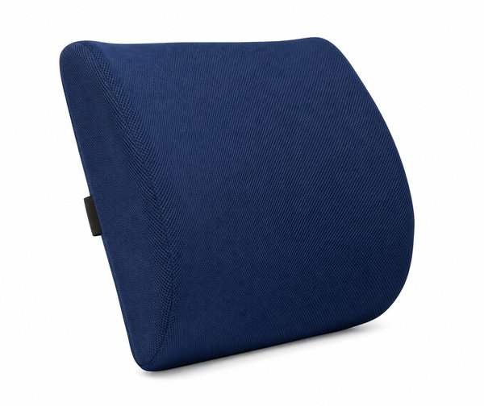
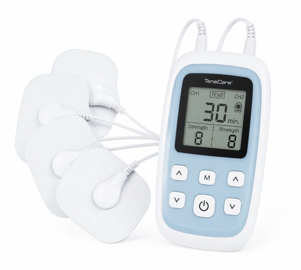
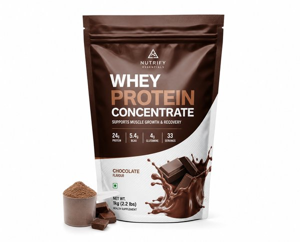

【2026年最新】デスクワークの肩こり・腰痛を撃退！姿勢改善＆疲労回復おすすめヘルスケアグッズ10選
一日中パソコンに向かって作業をしていると、夕方には肩がガチガチに凝り固まり、腰や背中にずっしりとした重みを感じませんか？
姿勢の崩れや合わないオフィスチェアを放置していると、集中力が低下するだけでなく慢性的な身体の不調につながってしまいます。
本記事では、長時間のPC作業に悩む編集部が実際に取り入れて劇的な効果を実感した、デスクワークの肩こり・腰痛を撃退する姿勢改善＆疲労回復グッズ10選をご紹介します。
- おすすめ10選 スペック・特徴比較表
- BEST 1｜Style PREMIUM（スタイル プレミアム）姿勢矯正シート
- BEST 2｜ノートパソコンスタンド 無段階高さ調整 アルミ合金製
- BEST 3｜MX KEYS mini ミニマリスト ワイヤレス イルミネーション キーボード
- BEST 4｜エルゴノミクス ワイヤレスマウス EX-G 握りの極み
- BEST 5｜デスク下フットレスト 角度＆高さ3段階調整 足置き台
- BEST 6｜ストレッチロールS SR-002 振動フォームローラー
- BEST 7｜ランバーサポート 背当てクッション 低反発
- BEST 8｜めぐりズム 蒸気でホットアイマスク 12枚入 無香料/ラベンダー
- BEST 9｜低周波治療器 HV-F021 コンパクトタイプ
- BEST 10｜Impact ホエイ プロテイン 1kg ナチュラルチョコレート
- 【読者限定】無料体験キャンペーン
- まとめ：生活をラクにする最初の一歩
| 順位 | 商品名 | ブランド | 最大の特徴・おすすめ理由 | 総合評価 |
|---|---|---|---|---|
| BEST 1 | Style PREMIUM（スタイル プレミアム）姿勢矯正シート | MTG（エムティージー） | 座った瞬間に背筋が自然と伸びて猫背や前傾姿勢を強力に防止 | 4.9 ★ |
| BEST 2 | ノートパソコンスタンド 無段階高さ調整 アルミ合金製 | BoYata（ボヤタ） | 目線が正面に上がることでストレートネックと巻き肩を根本予防 | 4.9 ★ |
| BEST 3 | MX KEYS mini ミニマリスト ワイヤレス イルミネーション キーボード | Logicool（ロジクール） | 吸い付くような打鍵感で長時間の長文入力でも指や手首が疲れない | 4.9 ★ |
| BEST 4 | エルゴノミクス ワイヤレスマウス EX-G 握りの極み | ELECOM（エレコム） | 手首を自然な角度でキープでき長時間の作業でも疲れにくい | 4.8 ★ |
| BEST 5 | デスク下フットレスト 角度＆高さ3段階調整 足置き台 | サンワダイレクト（SANWA DIRECT） | 足が浮かないため骨盤が安定し腰痛予防に直結する | 4.7 ★ |
| BEST 6 | ストレッチロールS SR-002 振動フォームローラー | DOCTORAIR（ドクターエア） | 自分でゴロゴロ動かさなくても当てるだけで自動で筋肉が緩む | 4.8 ★ |
| BEST 7 | ランバーサポート 背当てクッション 低反発 | TEMPUR（テンピュール） | 体温と体重に反応して吸い付くように腰にフィットする低反発素材 | 4.8 ★ |
| BEST 8 | めぐりズム 蒸気でホットアイマスク 12枚入 無香料/ラベンダー | 花王（Kao） | 袋から出すだけで自動発熱するためお昼休みや就寝前に手軽に使える | 4.9 ★ |
| BEST 9 | 低周波治療器 HV-F021 コンパクトタイプ | オムロン（OMRON） | 作業しながら肩や腰にパッドを貼ってピンポイント治療ができる | 4.8 ★ |
| BEST 10 | Impact ホエイ プロテイン 1kg ナチュラルチョコレート | Myprotein（マイプロテイン） | 1杯で必要なタンパク質を効率よく摂取でき間食の代わりにも最適 | 4.8 ★ |
Style PREMIUM（スタイル プレミアム）姿勢矯正シート

カイロプラクティックの理論を応用した独自の立体構造シート。低反発と高反発の二層ウレタンが骨盤を立てて腰まわりを優しくホールドし、座るだけで理想的な「S字姿勢」をキープ。長時間の座り作業でも腰が本当に痛くなりません。
- 座った瞬間に背筋が自然と伸びて猫背や前傾姿勢を強力に防止
- 二層ウレタンの贅沢なクッション性でお尻が痛くならず快適
- 手持ちのオフィスチェアや座椅子、床置きでも使える万能設計
- 機能性重視のため本体サイズが大きく持ち運びには不向き
ノートパソコンスタンド 無段階高さ調整 アルミ合金製

デスクワーカーの定番中の定番PCスタンド。無段階で高さと角度を自由に調整でき、ノートパソコンの画面を目線の高さまで持ち上げることで首への負担を劇的に軽減します。タイピングしても揺れない抜群の剛性感。
- 目線が正面に上がることでストレートネックと巻き肩を根本予防
- 耐荷重20kgの強靭なヒンジ構造でタイピング時のグラつきゼロ
- アルミ合金製で放熱効果が高くノートPCの熱暴走を防ぐ
- ヒンジが非常に頑丈に作られているため角度調整に少し力が必要
MX KEYS mini ミニマリスト ワイヤレス イルミネーション キーボード

指先の形状にフィットする球状にくぼんだキーと心地よいパンタグラフ打鍵感が特徴の最高峰コンパクトキーボード。テンキーレスでマウスとの距離が縮まるため、腕を開かずに自然な姿勢でタイピングでき肩こりを防ぎます。
- 吸い付くような打鍵感で長時間の長文入力でも指や手首が疲れない
- コンパクト設計でマウス操作時に腕や肩への負担が少ない
- 最大3台のデバイスをボタン1つで瞬時に切り替え可能
- 専用のパームレストを併用するとさらに手首の負担を軽減できる
エルゴノミクス ワイヤレスマウス EX-G 握りの極み

手のひら・指の形状に合わせた自然なカーブ設計で、手の筋肉にかかるストレスを最小限に抑えたエルゴノミクスマウス。握り込まずに手を添えるだけで軽快に操作でき、腱鞘炎や手首の痛みを未然に防ぎます。
- 手首を自然な角度でキープでき長時間の作業でも疲れにくい
- カチカチ音がしない静音スイッチ採用でオフィスやカフェでも安心
- 手の大きさに合わせて選べるサイズ展開（M/L/XL）
- 普通のマウスから移行した直後は少し慣れが必要
デスク下フットレスト 角度＆高さ3段階調整 足置き台

デスクの下に置いて足を乗せるだけで、太もも裏の圧迫を解放し血流を促進するフットレスト。足裏をしっかり地面につけることで腰への体圧分散が均等になり、前滑りや猫背を効果的に防ぎます。
- 足が浮かないため骨盤が安定し腰痛予防に直結する
- 角度と高さを自分好みに調整でき足首のストレッチも可能
- 足裏を刺激するマッサージローラーと凸凹テクスチャ付き
- デスク下の足元スペースをあらかじめ確保しておく必要がある
ストレッチロールS SR-002 振動フォームローラー

1分間に最大4,000回の微細な振動を発生させる電動フォームローラー。背中や肩甲骨、太もも、ふくらはぎの下に置いて体重をかけるだけで、深層の筋膜まで強力にリリースし頑固なコリを瞬時にほぐします。
- 自分でゴロゴロ動かさなくても当てるだけで自動で筋肉が緩む
- 4段階の振動レベル調整でコリ具合に合わせた本格ケア
- 充電式コードレスでリビングの床やベッドの上ですぐ使える
- 最大振動時は階下への振動対策にヨガマットの併用がおすすめ
ランバーサポート 背当てクッション 低反発

NASAが開発したテンピュール素材を採用した最高級ランバーサポートクッション。背骨の自然なS字カーブにぴったりとフィットし、腰椎にかかる負担を吸収・分散。既存のどんな椅子も極上の座り心地に進化します。
- 体温と体重に反応して吸い付くように腰にフィットする低反発素材
- 背中と椅子の隙間をしっかり埋めて腰の反りすぎを防ぐ
- カバーは取り外して洗濯可能でいつでも清潔
- 厚みがあるため座面の奥行きが浅い椅子では少し前寄りになる
めぐりズム 蒸気でホットアイマスク 12枚入 無香料/ラベンダー

約40℃の心地よい蒸気が約20分間続き、酷使した目元と目奥の筋肉をじんわり温めてほぐす温熱アイマスク。PC画面の見過ぎによる眼精疲労、目の奥の重み、ピント調節の疲労を急速に回復させます。
- 袋から出すだけで自動発熱するためお昼休みや就寝前に手軽に使える
- たっぷりの蒸気で目元がしっとり潤いリラックス効果抜群
- 耳掛け付きでどんな体勢でもずれ落ちない快適フィット
- 使い捨てタイプのため毎日使う場合はまとめ買いがお得
低周波治療器 HV-F021 コンパクトタイプ

片手に収まるコンパクトボディながら、肩・腰・腕・関節・ふくらはぎ・足裏の6部位に対応した本格低周波治療器。「たたく」「もむ」「おす」の3つのもみ方モードと15段階の強さ調整で、頑固な痛みをブロックします。
- 作業しながら肩や腰にパッドを貼ってピンポイント治療ができる
- 大型液晶と3つのボタンで誰でも迷わず簡単に操作可能
- 粘着パッドは水洗い可能で約300回繰り返し使えて経済的
- 長期間使用すると粘着パッドの交換が必要になる
Impact ホエイ プロテイン 1kg ナチュラルチョコレート

1食あたり21gの高純度タンパク質を含有する世界的大ヒットプロテイン。長時間のデスクワークで乱れがちな食生活をサポートし、筋肉の修復や疲労回復に必要なアミノ酸を手軽にチャージできます。水に溶けやすく味も抜群。
- 1杯で必要なタンパク質を効率よく摂取でき間食の代わりにも最適
- まるでココアのように美味しく毎日飽きずに続けられる
- コスパが非常に高く日々のコンディショニング維持に最適
- チャック部分に粉が挟まると密閉しにくいためクリップ留め推奨
日々の暮らしや買い物を楽しむなら、人気雑誌1,000誌以上がスマホやタブレットで読み放題の「楽天マガジン」が圧倒的におすすめです！初回31日間は完全無料で、無料期間中に解約すれば料金は1円もかかりません。
＼ 読者負担0円！雑誌1,000誌読み放題 ／楽天マガジン 31日間無料お試しを詳しく見る →
💡 まとめ：生活をラクにする最初の一歩
デスクワークによる身体のコリや痛みは、我慢して気合で乗り切るものではなく「環境と道具で未然に防ぐ」のが正解です。まずは自然と背筋が伸びる「BoYataのPCスタンド」や、腰をしっかりホールドする「Style PREMIUM」から導入して、夕方になっても疲れない快適な作業環境を手に入れてみてください。
楽天市場では「5と0のつく日」や「お買い物マラソン」などのキャンペーンに合わせて購入すると、ポイント還元が最大化してお得に手に入ります。ぜひチェックしてみてくださいね。